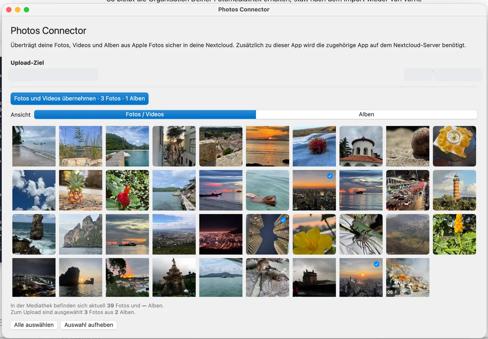
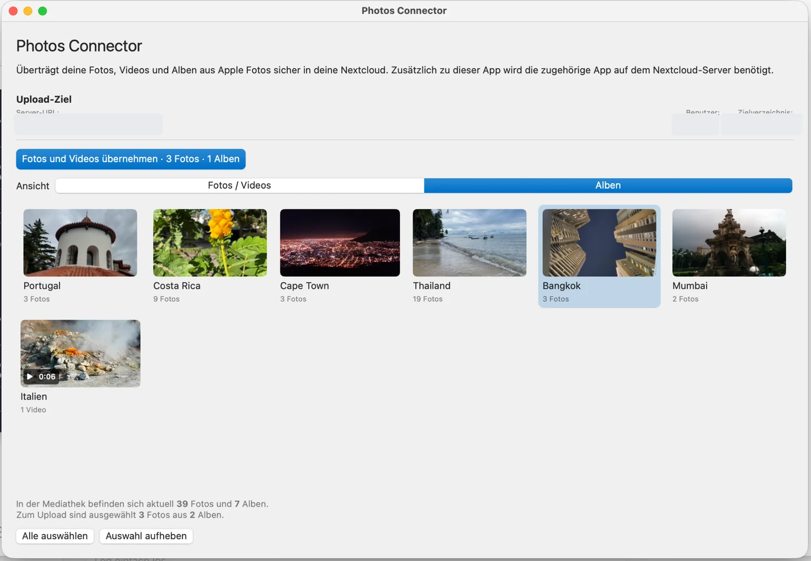
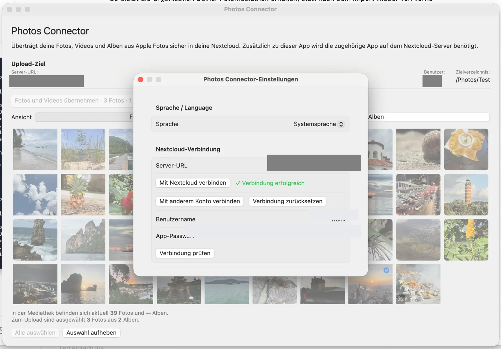
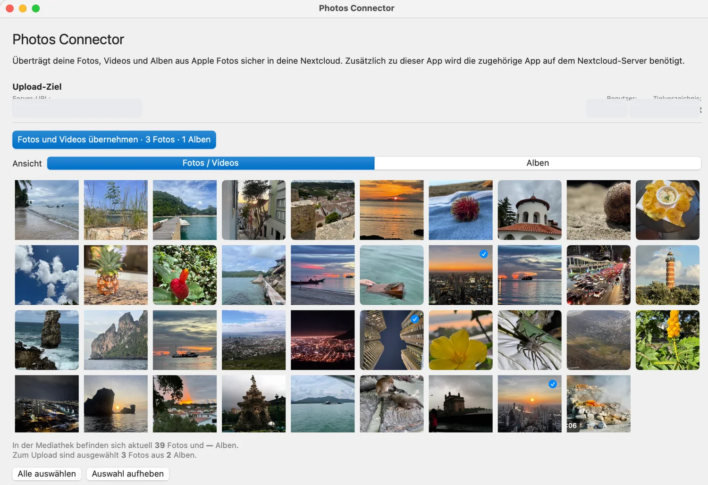

Photos Connector
Deine Fotos. Deine Alben. Deine Nextcloud.
Übertrage Fotos und Videos aus Apple Fotos in Deine eigene Nextcloud – inklusive Deiner Album-Zuordnungen. Bereits bekannte Inhalte werden erkannt, neue Inhalte gezielt ergänzt.
Photos Connector jetzt testen: Die macOS-Version befindet sich aktuell im Beta-Test. Mit Apple TestFlight kannst Du die aktuelle Version ausprobieren. Feedback aus dem Praxiseinsatz ist willkommen.

Fotos und Videos übernehmen
Wähle einzelne Fotos, Videos oder ganze Alben aus Deiner Systemfotomediathek.
Album-Zuordnungen erhalten
Deine in Apple Fotos gepflegte Organisation wird in Nextcloud Photos übernommen.
Nur neue Inhalte hochladen
Bereits bekannte Inhalte werden erkannt. Bei späteren Übertragungen werden nur neue Inhalte hochgeladen.
Für Deine eigene Nextcloud
Photos Connector verbindet Deinen Mac direkt mit der von Dir konfigurierten Nextcloud.
Deine Organisation bleibt erhalten
Photos Connector übernimmt nicht nur Fotos und Videos, sondern auch die Zuordnung zu Deinen Alben. Ein Foto kann dabei weiterhin mehreren Alben zugeordnet sein. So musst Du Deine Fotomediathek nach dem Import nicht in Nextcloud erneut organisieren.
Auch bei späteren Übertragungen können Album-Zuordnungen abgeglichen werden, ohne bereits bekannte Dateien unnötig erneut hochzuladen.

In drei Schritten zu Deinen Fotos in der Nextcloud
Verbinden
Trage die URL Deiner Nextcloud ein und verbinde Photos Connector mit Deinem Benutzerkonto.
Auswählen
Wähle Fotos, Videos oder Alben aus Deiner macOS-Systemfotomediathek.
Übernehmen
Photos Connector überträgt neue Inhalte und stellt die ausgewählten Album-Zuordnungen in Nextcloud Photos her.

Schnell eingerichtet
In den Einstellungen verbindest Du Photos Connector mit Deiner Nextcloud und legst das Zielverzeichnis für die übernommenen Dateien fest.
Bei einer neuen Konfiguration ist /Photos/Photos Connector als Ziel vorgesehen. Das Verzeichnis kann geändert werden.
Was Photos Connector bewusst nicht macht
Photos Connector ist auf Übernehmen und Ergänzen ausgerichtet. Das Entfernen eines Fotos aus Apple Fotos führt nicht dazu, dass die entsprechende Datei aus Deiner Nextcloud gelöscht wird. Photos Connector verändert außerdem Deine Apple-Fotomediathek nicht.
iPhone und iPad sind geplant
Eine iOS-Version von Photos Connector ist in Entwicklung. Die aktuelle Version ist zunächst für macOS vorgesehen.
